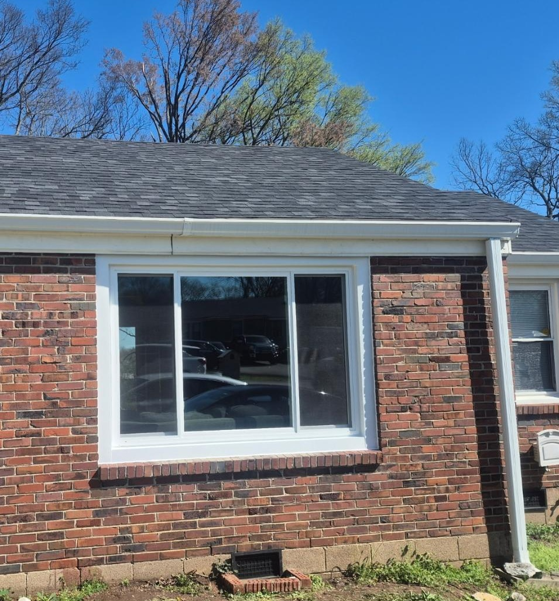
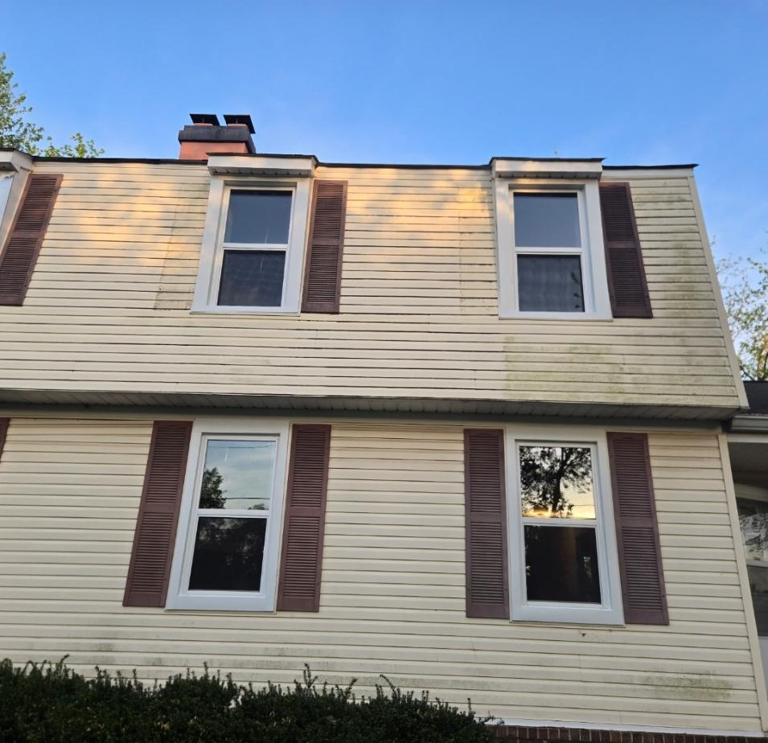
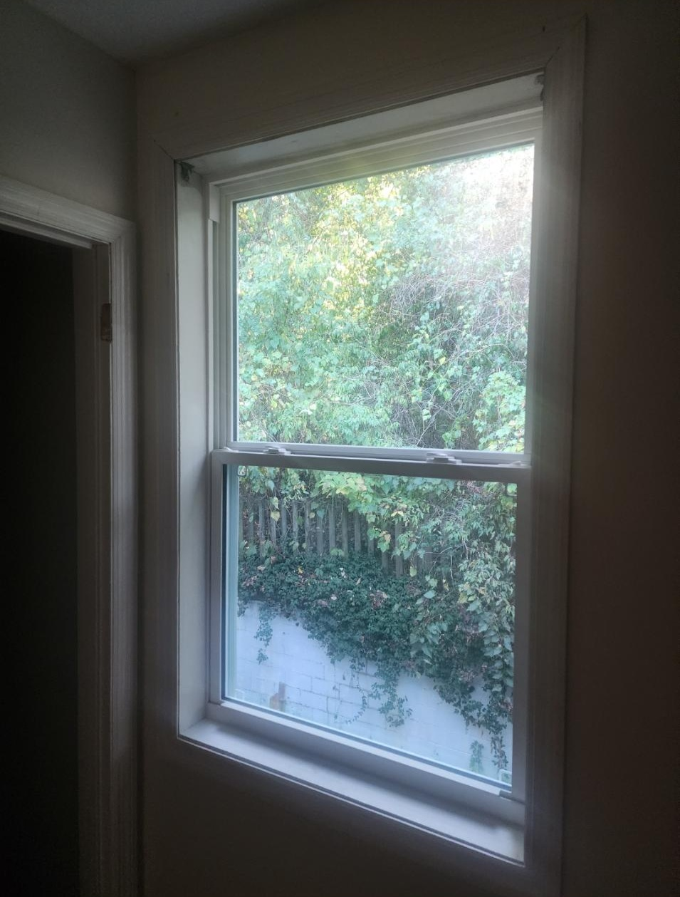

Case Study Library
Project Case Studies In Progress
Blue Haven Windows is building a larger case study library. For now, this page pairs finished project photos with a clear framework for future stories: the homeowner problem, consultation notes, selected window package, installation considerations, before/after photos, and review themes.
Comfort Improvement Case Study
Framework for a drafty-room or heat-gain project story.
Curb Appeal Case Study
Framework for exterior style, grids, and curb appeal results.
Efficiency Upgrade Case Study
Framework for energy-efficient glass and comfort outcomes.
Finished Project Photos
Before photos are still being collected, so these pages highlight completed Blue Haven Windows installations and finished product details.

Finished Picture Window

Finished Exterior Installation

Finished Interior View
Explore More